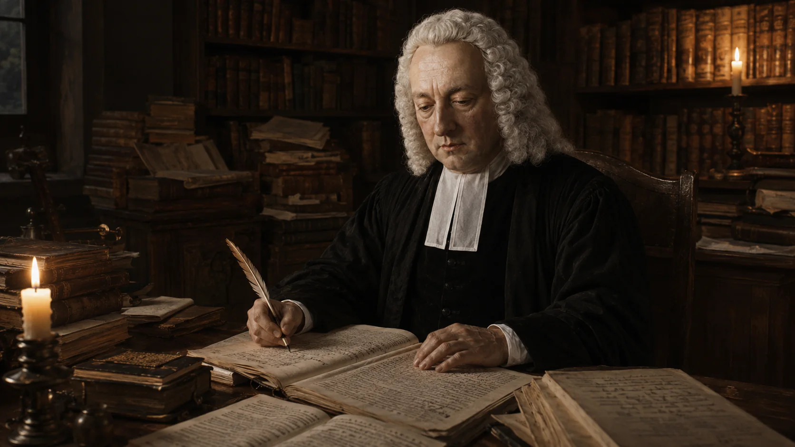
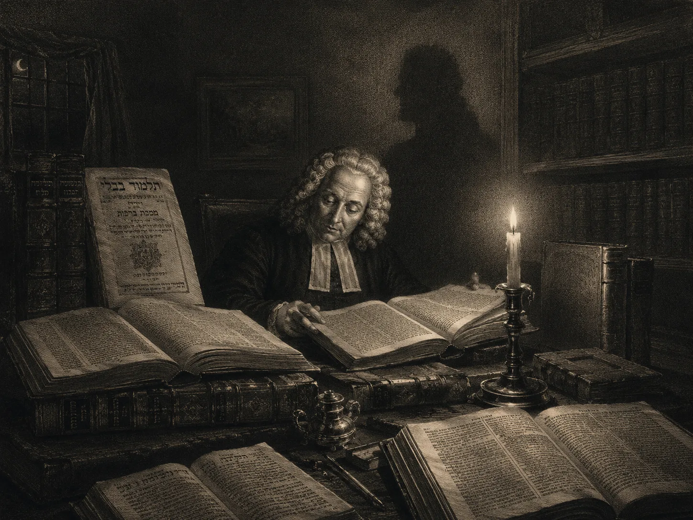
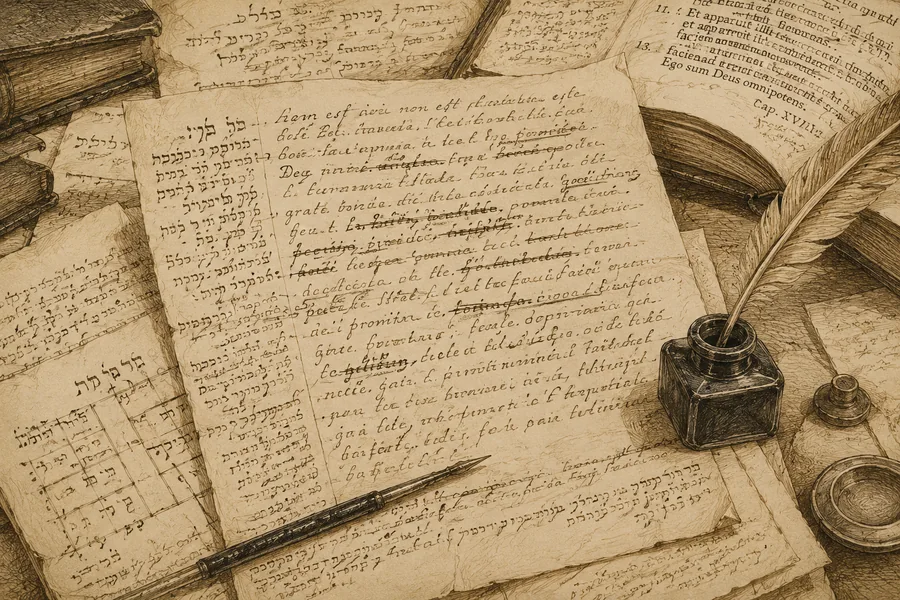

Коротко
- 01
Джон Гилл создал первый на английском языке девятитомный комментарий на всю Библию — «Exposition of the Old and New Testaments» (1748–1763).
- 02
Его метод — грамматико-историческая экзегеза с опорой на еврейский текст: Гилл работал с масоретским текстом, Талмудом, мидрашами и раввинистической литературой.
- 03
«Body of Doctrinal Divinity» (1767) — систематическое богословие Гилла, охватывающее все основные доктрины христианской веры в кальвинистской традиции.
- 04
Гилл твёрдо держался реформатского вероисповедания, но избегал полемической жёсткости — его тон был пастырским, а не воинственным.
- 05
Его учёность — не самоцель, а инструмент для понимания Писания. Гилл не отделял экзегезу от проповеди и пастырской заботы.
III. Учёность, полемика и богословский метод
Доктор Многотомный — гений без кафедр и университетов
Во второй части важно увидеть главное: учёность Гилла не была внешней надстройкой над пасторством, а одной из его форм. Он работал с текстом не ради академического престижа и не ради демонстрации эрудиции, а потому что считал точность в истине обязанностью перед церковью. Не имея доступа к университетской карьере, он построил собственную школу труда — ранние часы, языки оригинала, раввинистические источники, отцов Церкви, полемику с современниками. Именно из этого ритма выросли и трактат о Троице, и девятитомный комментарий, и «Свод богословия». Поэтому прежде чем обсуждать оценки и ярлыки, нужно честно увидеть масштаб этого интеллектуального служения.
Первые публичные труды и деизм (1724–1728)
Первой опубликованной работой молодого Гилла в 1724 году стала надгробная проповедь «Слава благодати Бога, явленная в её преизбытке над преизбытком греха» на текст из Рим. 5:20–21. Этот выбор темы красноречиво обозначил догматический центр тяжести всего его последующего служения: благодать Божия как абсолютный, побеждающий триумф. В 1725 году последовал его второй труд — проповедь «Урим и Туммим, обретённые во Христе» (Втор. 33:8), где ярко проявился его оригинальный экзегетический метод: раскрытие древнееврейских прообразов и обрядов через вечную личность Иисуса Христа.
Вскоре молодому богослову пришлось вступить на поле широкой интеллектуальной защиты христианства. В 1727 году известный английский философ-деист и вольнодумец Энтони Коллинз (эсквайр, но не лорд) опубликовал свой скептический трактат «Схема буквального пророчества», направленный на разрушение веры в ветхозаветные мессианские пророчества. Во время одной из бесед в Лондоне скептики самоуверенно заявили, что «ни один кальвинист не способен написать в этой полемике ничего заслуживающего внимания». Услышав об этом вызове, друзья Гилла побудили его ответить. Пастор произнёс в Хорслидауне блестящую серию проповедей, подробно разобрав мессианские тексты в хронологическом порядке, и в 1728 году издал их как «Пророчества Ветхого Завета о Мессии, буквально истолкованные и применённые к Иисусу». Этот выдающийся труд мгновенно ввёл имя Гилла в европейский академический оборот: великий немецкий библиограф Иоганн Альберт Фабрициус включил книгу Гилла в свой знаменитый указатель «Salutaris Lux Evangelii»1Johann Albert Fabricius, Salutaris Lux Evangelii toti orbi per divinam gratiam exoriens. Hamburg, 1731. Fabricius (1668–1736) — один из крупнейших немецких библиографов XVIII века. (Гамбург, 1731), оценив её как одну из лучших защит христианского упования.
Лекции в Истчипе: двадцать семь лет вечерних проповедей
В 1729 году Джон Гилл начал еженедельные вечерние лекции по средам в Грейт-Истчип (Great Eastcheap). Этот лекционный курс продолжался непрерывно в течение двадцати семи лет, завершившись лишь в 1756 году из-за ухудшения его здоровья. Лекции в Истчипе стали важнейшей академической трибуной Лондона: на них собирались сотни диссентеров и мыслящих христиан самых разных конфессий, чтобы услышать глубокий и авторитетный разбор сложных библейских вопросов.
Этот триумф ортодоксии развивался на фоне трагического интеллектуального кризиса английского протестантизма. В 1719 году состоялся знаменитый Солтерс-Холльский синод, который расколол диссентерское движение Англии. Собрание пресвитерианских, независимых и баптистских пасторов обсуждало, допустимо ли требовать от служителей обязательного подписания тринитарного исповедания веры. Большинство пресвитериан и «общих» баптистов проголосовали против обязательной подписки, уступив давлению рационализма и деизма. Это решение положило начало их быстрому уклонению в сторону арианства и унитаризма. Лишь независимые и «особые» баптисты проявили стойкость, сохранив верность классической христианской ортодоксии. Гилл возглавил Хорслидаунскую общину буквально через год после этого синода, и вся его последующая доктринальная деятельность была сознательным ответом на этот великий раскол, удерживая баптистские церкви от вероотступничества.
«Учение о Троице» (1731) — манифест против унитарианства
В условиях нарастающего уклонения многих диссентерских церквей в арианские заблуждения Гилл опубликовал в 1731 году свой классический трактат «Учение о Троице, изложенное и защищённое». Этот труд стал важнейшим барьером на пути рационалистического унитарианства. Гилл утверждал, что истинное христианское богословие невозможно без ясного, последовательного тринитаризма. Ссылаясь на Писание и великих Отцов древней Церкви, он защищал вечное Божество Сына и Святого Духа, утверждая Их полное равенство с Отцом в Божественной сущности. Трактат Гилла ценился столь высоко, что даже многие англиканские богословы использовали его как авторитетный учебник в спорах с социнианами.
«Причина Бога и истины» (1735–1738) — битва с Уитби
В 1733–1734 годах в Англии был вновь переиздан известный арминианский труд англиканского богослова Дэниела Уитби — «Рассуждение о пяти пунктах», ставший манифестом против кальвинистского учения о суверенном спасении грешника. Труд Уитби пользовался огромным успехом и уводил многие общины в сторону синергизма. Осознавая пагубность этого влияния, Гилл взялся за детальный, построчный ответ.
В течение трёх лет он публиковал свой монументальный четырёхчастный труд «Дело Бога и истины» (The Cause of God and Truth, 1735–1738). В этой великой работе Гилл с непревзойдённым изяществом и научной скрупулёзностью проанализировал сотни библейских текстов, используемых арминианами, опроверг их аргументы и представил величественную библейскую защиту пяти пунктов кальвинизма — вечного избрания, особого искупления, полного развращения воли, действенной благодати в возрождении и окончательной стойкости святых. Четвёртая часть этой книги уникальна: Гилл собрал обширные цитаты из ранних Отцов Церкви (до Августина), доказав, что доктрины благодати не были новшеством Реформации, а составляли веру первоначальной христианской Церкви.
«В религии путеводными знаками, указывающими и направляющими человека на путь, являются Писания, оракулы Божьи, и только они».
— Джон Гилл, проповедь «Писания — единственный путеводитель» (1750)Девятитомный комментарий (1746–1763) и докторская степень (1748)
Главным, титаническим трудом всей жизни доктора Гилла стал его монументальный девятитомный комментарий на всю Библию («Толкование Ветхого и Нового Заветов» / An Exposition of the Old and New Testaments), издававшийся частями с 1746 по 1763 год. Сначала пастор выпустил комментарий на Новый Завет в трёх огромных томах folio (1746–1748). Затем последовало титаническое исследование Ветхого Завета в шести массивных томах folio, завершённое в 1763 году. Это был первый в истории английского протестантизма полный комментарий на каждую главу и стих Писания, написанный одним человеком.
В 1748 году, когда публикация томов Нового Завета близилась к завершению, Гилл получил приятную весть из Шотландии. Маришальский колледж Абердина присудил ему почётную степень доктора богословия (Doctor of Divinity). Письма профессоров Осборна и Поллока показывают, что кандидатура Гилла была предложена и утверждена без его предварительного ходатайства: инициатива исходила от шотландских учёных, восхищённых глубиной его новозаветных трудов. Профессор Осборн отказался от причитавшихся ему сборов, подчёркивая, что степень не была ни куплена, ни выпрошена. Когда счастливые дьяконы церкви Хорслидауна пришли поздравить своего пастора с признанием, Гилл произнёс свои знаменитые слова: «Я о ней не думал, не покупал её и не искал её» — «Я о ней не думал, не покупал её и не искал её». Наличие докторской степени у баптистского диссентера в эпоху господства Англиканской церкви было редчайшим исключением, признающим его неоспоримый научный авторитет.
«Каждый христианин должен быть богословом.4John Gill, A Body of Doctrinal Divinity (1769), Preface. Рус. пер.: «Каждый христианин должен быть богословом. Это не титул, который следует оставлять только за выпускниками колледжей или теми, кто назначен на церковные должности». Это не титул, который следует оставлять только за выпускниками колледжей или теми, кто назначен на церковные должности».
— Джон Гилл, Введение к «Своду богословия»
Раввинист — гебраист с Мишной в руках
«Вероятно, Гилл был наиболее выдающимся в мире знатоком иврита своего времени. Он понимал: Новый Завет написан по-гречески, но мыслили его авторы по-еврейски. Среди всего этого богословского мусора есть самоцветы — ибо Гилл вложил силы в изучение еврейской мысли, обычаев и культуры: таргумы, Мишну, Талмуды, древних и современных раввинов.»
— Чарльз Сперджен, в пересказе по материалу G3 Ministries об учёности ГиллаЧто делало комментарий Гилла уникальным среди сотен других экзегетических трудов его времени? Его редкая для XVIII века глубина владения древнееврейской и раввинистической литературой. Задолго до того, как современные исследователи осознали важность семитского контекста Нового Завета, Гилл читал Талмуд в оригинале, свободно ориентировался в запутанных трактатах Мишны, Таргумов, Мидрашей и средневековых еврейских комментаторов — Маймонида, Кимхи, Раши и Ибн Эзры.
Разбирая сложные места Писания, Гилл привлекал эти еврейские источники не ради праздного любопытства, а для глубокого освещения исторического, культурного и языкового фона библейских событий. Примером его мастерского метода служит толкование текста из Матфея 1:21 («Ибо Он спасёт людей Своих от грехов их»). Гилл обращается к Талмуду и Таргумам, чтобы показать: иудеи того времени ожидали Мессию как политического избавителя от римского ига, но имя Иисуса указывает на совершенно иное, радикальное избавление — духовное спасение от вечного бремени греха. Аналогично, разбирая текст из Аввакума 3:19 («Господь Бог — сила моя»), Гилл раскрывает древние еврейские музыкальные термины и храмовые традиции исполнения псалмов, перекидывая прочный экзегетический мост между ветхозаветной надеждой и новозаветной благодатью.
Свои лингвистические познания Гилл блестяще защитил в книге «Диссертация о древности еврейского языка, букв, гласных точек и акцентов» (1767). В этом глубоком трактате он отстаивал Божественное происхождение и древность еврейских гласных знаков (Масоры), споря с теми европейскими учёными, кто считал их поздним изобретением средневековых масоретов. Кроме того, в 1760-х годах он состоял в научной переписке с выдающимся текстологом Бенджамином Кенникоттом3Benjamin Kennicott (1718–1783) — английский текстолог, руководитель проекта Vetus Testamentum Hebraicum cum variis lectionibus (Oxford, 1776–1780). Гилл помогал ему в сличении еврейских манускриптов., помогая ему в сличении древнееврейских манускриптов Ветхого Завета для его монументального критического издания.

Песнь Песней (1728) — аллегория Христа и Церкви
В самом начале своего пастырства Гилл обратился к одной из самых трудной книг Священного Писания — Песни Песней Соломона. В 1724–1727 годах он произнёс серию из 122 утренних воскресных проповедей по этой книге, а в 1728 году издал их как единый труд «Экспозиция Книги Песни Песней Соломона».
Пользуясь классическим аллегорическим методом пуританской традиции, Гилл видел в этой поэме не просто человеческую любовную лирику, а глубокий, мистический и нежный диалог между Христом (Женихом) и Его избранной Церковью (Невестой). Труд Гилла по Песни Песней стал его самым личным, поэтичным и тёплым произведением, раскрывающим его нежное пастырское сердце.
«Систематическое богословие, я отдаю себе в этом отчёт, сделалось весьма непопулярным.6John Gill, A Body of Doctrinal Divinity (1769), Preface. Рус. пер.: «Систематическое богословие, я отдаю себе в этом отчёт, сделалось весьма непопулярным. Но где нет учения веры — там нельзя и ожидать послушания веры». Но где нет учения веры — там нельзя и ожидать послушания веры».
— Джон Гилл, Введение к «Своду догматического богословия» (1769)
«Свод богословия» (1769–1770) — первая баптистская систематика
«Оправдание — это юридический акт, объявление человека праведным в соответствии с законом; это не соделывание его праведным путём вливания в него святости... но через вменение ему праведности Христа.»
— Джон Гилл, «Свод догматического богословия»Венцом всех догматических трудов доктора Гилла стала его грандиозная систематика веры — первая в истории баптистского движения полная богословская систематика. Труд выходил в двух частях: в 1769 году пастор опубликовал «Свод догматического богословия» (A Body of Doctrinal Divinity) в двух массивных томах quarto (1091 страница). Год спустя, в 1770 году, вышел третий, практический том всего свода — «Свод практического богословия» (A Body of Practical Divinity, 514 страниц). Вместе они составили законченный, величественный монумент баптистской ортодоксии.
| Часть | Книги | Содержание |
|---|---|---|
| «Свод догматического богословия» Doctrinal Divinity | 7 книг | Бог, Писание, имена и свойства Бога, Троица; дела и декреты Бога; завет благодати; действия благодати во времени; личность и служение Христа; благословения благодати; конечное состояние человека. |
| «Свод практического богословия» Practical Divinity | 5 книг | Внутреннее поклонение и благочестие; публичное поклонение и устройство церкви; установления — крещение, Вечеря, проповедь, молитва, пение; частные, семейные, гражданские и нравственные обязанности; диссертация о крещении еврейских прозелитов. |
Поэтому «Свод» нельзя читать как сухой каталог доктрин: он движется от Бога и вечного завета к Церкви, поклонению, семье, гражданским обязанностям и практике крещения. Именно здесь виден Гилл как систематик, пастор и практический богослов одновременно.
Богословская система Гилла отличалась поразительной «кафоличностью без католичества». Выстраивая баптистские доктрины, он опирался не на узко-конфессиональные споры, а на авторитет всей вселенской Церкви, обильно цитируя Климента Александрийского, Тертуллиана, Киприана, Иеронима и Августина, а также великих реформаторов — Кальвина и Безу. Гилл оригинально перестроил привычный порядок спасения (ordo salutis). В то время как большинство кальвинистов учили последовательности: возрождение → вера → оправдание, Гилл, исходя из вечного замысла Божия, выстраивал её иначе: оправдание → возрождение → вера. Оправдание, по его мысли, совершилось в вечном Божьем решении и в воскресении Христа (виртуально), а вера является лишь плодом и свидетельством этого оправдания в сознании верующего.
Современные исследования Дэвида Ратела и Кристофера Грина5David Mark Rathel, "John Gill and the Rule of Faith." Southeastern Theological Review 14.2 (2023). Christopher R. Green, "Baptist Catholicity in the Ecclesiology of John Gill (1697–1771)." Themelios 49.3 (2024). уточняют этот метод: Гилл был не изолированным «библейским примитивистом», а баптистским богословом, читавшим Писание через правило веры и через проверенную ортодоксальную традицию. Именно поэтому, защищая баптистские отличия, он спокойно обращался к отцам Церкви, схоластам, реформатским педобаптистам и пуританам: для него традиция была не господином над Писанием, а служебным свидетелем, помогающим читать Писание в согласии с верой Церкви.
Одним из самых ярких и оригинальных вкладов Гилла в реформатское богословие стало явное включение Святого Духа в вечный совет искупления (pactum salutis). Если прежние богословы рассматривали этот совет как соглашение исключительно между Отцом и Сыном, то Гилл доказал: Дух Святой не был пассивным наблюдателем вечного решения, а являлся полноправной и активной «заинтересованной стороной» завета, взяв на Себя обязательство совершить возрождение и освящение избранных в истории. При этом, несмотря на всю строгость своей догматики, Гилл всегда оставался «богословом с нежным сердцем», чьи страницы о неизмеримой Божьей любви к человеку дышат глубоким личным благочестием.

Церковь, таинства и пасторское сердце
В своём «Своде практического богословия» Гилл детально изложил строгое баптистское учение о Церкви. Он утверждал, что в поместной общине есть только два библейских служения — пасторы (епископы, пресвитеры) и дьяконы. Правящие пресвитеры пресвитерианской модели им решительно отвергались. Он верил в независимость поместной общины (конгрегационализм), утверждая, что рукоположение есть лишь публичная декларация и признание церковью Божьего призвания служителя, а не передача таинственной благодати через руки старейшин.
Таинства Церкви — крещение верующих по вере погружением и Вечерю Господню — он рассматривал как прямые установления Спасителя, которые должны соблюдаться в строгой чистоте. Особое место в его жизни занимала Вечеря. Биограф Риппон оставил нам волняющее свидетельство о том, с каким трепетом пастор совершал это таинство:
Эсхатология: духовное и личное царствование Христа
Эсхатологические взгляды Гилла, подробно изложенные им в толкованиях на книгу Откровение и Даниила, отличались поразительной глубиной и оригинальностью. В эпоху, когда большинство богословов колебались между традиционным амилленаризмом и набиравшим силу постмилленаризмом, Гилл выстроил стройную предмилленаристскую (премилленаристскую) систему, предвосхитив многие идеи последующих веков.
Он разграничивал два великих этапа будущего царствования Христа: духовное царствование (spiritual reign) и личное царствование (personal reign). На первом этапе Евангелие силой Духа Святого покорит народы, антихрист будет сокрушён, а Церковь войдёт в эпоху невиданной духовной славы и мира на земле. На втором этапе произойдёт Второе пришествие Иисуса Христа во плоти, воскресение праведных и Его славное личное царствование со святыми в течение буквальной тысячи лет на обновлённой земле. Эти глубокие, библейски взвешенные суждения Гилла давали его общине непоколебимую надежду посреди любых исторических потрясений его бурного века.
Новейшее исследование Baptist Quarterly, озаглавленное «His Favourite People», показывает ещё один забытый слой этой эсхатологии: Гилл был не только «духовным» толкователем Израиля как Церкви, но и ожидал будущего обращения этнических евреев и их восстановления в земле Ханаана. Он мог называть Церковь «мистическим духовным Израилем Божьим», но при этом сохранял отдельное место для национального Израиля в Божьем плане последних времён. Поэтому его еврейская учёность была не академической экзотикой: она была связана с надеждой на «славу последних дней», обращение «любимого народа» и сокрушение антихристовых сил Востока и Запада.
Источники и литература к Части II
Для этой части богословские утверждения сверялись прежде всего с собственными трудами Гилла и профильными академическими исследованиями. Популярные пересказы использовались только как вторичная навигация, но не как основание для выводов.